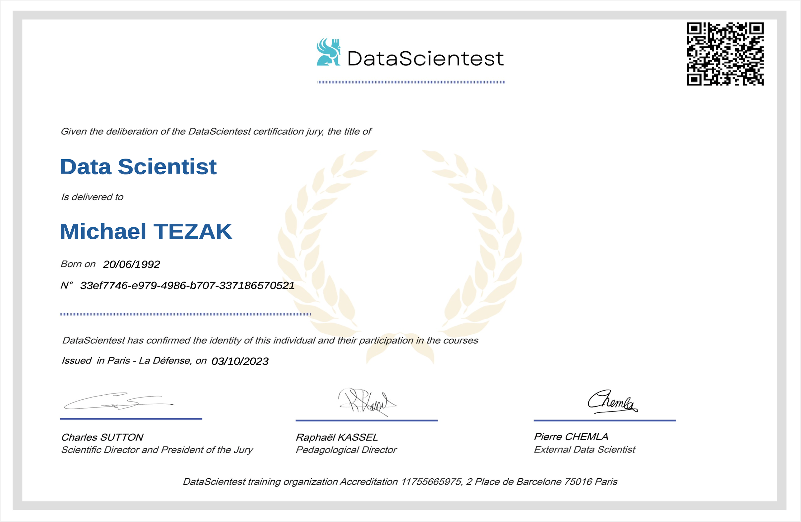

Qualifikationen
Data Science, Datenstrukturen & Algorithmen
Data Science
Nachdem ich mich bereits eine Weile mit Python beschäftigt hatte, machte ich auf Kaggle meine ersten Schritte mit Datenanalyse und Machine Learning. Fasziniert von der Vielfalt ausgklügelter Algorithmen, die dabei helfen, den möglichen Erkenntnisgewinn aus Datensätzen zu maximieren, entschied ich mich, ein dreimonatiges Bootcamp bei DataScientest zu absolvieren. Ich gewann dabei Erfahrung mit den folgenden Python Bibliotheken: Numpy, Pandas, Matplotlib, Seaborn, Bokeh,  Scikit-Learn, XGBoost, Imblearn, Statsmodels, PySpark, TensorFlow, Keras, PyTorch, NLTK, SHAP, BeautifulSoup, Selenium, Pillow, OpenCV und Streamlit, sowie mit der Datenbanksprache SQL. Gleichzeitig lernte ich die gesamte Pipeline der Datenwissenschaft kennen. Von Web Scraping, Datenreinigung, explorativer Analyse, Hypothesentests und Visualisierung über numerische Enkodierung, Dimensionsreduktion und Feature Engineering bis hin zur Implementierung diverser Machine Learning Algorithmen: lineare und logistische Regression, Decision Trees und Support Vector Machines, Bagging und Boosting Algorithmen, Clustering Methoden, Zeitreihenanalysen und sogar Deep Neural Networks (dense, convolutional und recurrent). Probleme wie unbalancierte Datensets, fehlende Einträge und die allgegenwärtigen Spannungsfelder zwischen Under- und Overfitting, Genauigkeit und Interpretierbarkeit lernte ich nicht nur abstrakt kennen – sie zählten zu den zentralen Herausforderungen meines Abschlussprojekts. Nach dem Bootcamp lernte ich auf eigene Faust noch alles rund um Docker, was schließlich das Web Deployment meiner App ermöglichte.
Zertifikate
- Exploratory Statistics with Pandas
- Geospatial Analysis with GeoPandas
- Data Visualization with Matplotlib
- Data Visualization with Seaborn
- Data Visualization with Bokeh
- Regression with Scikit-Learn
- Classification with Scikit-Learn
- Advanced Classification with Scikit-Learn
- Time Series Analysis with Statsmodels
- Introduction to Keras/TensorFlow
- Dense Neural Networks with Keras/TensorFlow
- Convolutional Neural Networks with Keras/TensorFlow
- Convolutional Neural Networks with PyTorch
- Clustering with Scikit-Learn
- Dimensionality Reduction with Scikit-Learn
- Reinforcement Learning
- Deep Reinforcement Learning
Datenanalyse & -visualisierung
{kind=link}
Supervised Learning
Unsupervised & Reinforcement Learning
- Web Scraping with BeautifulSoup
- Text Mining with NLTK
- Recurrent Neural Networks with PyTorch
- Recurrent Neural Networks with Keras/TensorFlow
- Machine Learning with PySpark
- SQL for Data Science (Bootcamp)
- SQL I (Kaggle)
- SQL II (Kaggle)
- Graph Theory with NetworkX
- Object Oriented Programming
Web Scraping & NLP
Big Data
{kind=link}
{kind=link}
Sonstige
Datenstrukturen & Algorithmen
Mittlerweile habe ich über 700 Coding Challenges auf den Plattformen LeetCode, Advent of Code, Project Euler und HackerRank gelößt. Einerseits weil ich eine Leidenschaft für Knobelaufgaben habe, andererseits weil ich besonders am Anfang ernorm viel dabei lernen konnte. Um Aufgaben dieser Art möglichst effizient zu lösen, bedarf es sowohl einer Kenntnis geläufiger Datenstrukturen und Algorithmen, als auch der Fähigkeit zu erkennen, welcher Ansatz für ein gegebenes Problem angemessen ist, sowie ein Verständnis für die Zeit- und Platzkomplexität potentieller Lösungswege. Während die meisten Programmierer all dies während ihres Studiums behandeln, habe ich mir dieses Wissen im Selbststudium angeeignet. Nun habe ich ein gründliches Verständnis von Heaps, Stacks, Queues, Graphs, Trees und Hashmaps und kann Binary-Search, Depth-first-Search, Breadth-first-Search, Backtracking, Sliding-Window und Dynamic-Programming Algorithmen implementieren.
Aufgrund der Tatsache, dass diese Plattformen die Möglichkeit bieten, seinen eigenen Code mit dem von Tausenden von anderen zu vergleichen, konnte ich mit der Zeit außerdem ein relativ gutes Gefühl dafür entwickeln, was sauberen, klaren, eindeutigen, simplen und eleganten (kurz: pythonic) Code ausmacht. Hierzu zähle ich auch eine gewisse Vertrautheit mit vielen von Pythons eigenen Bibliotheken wie zum Beispiel dataclasses, collections, deque, itertools, functools, bisect und regex.